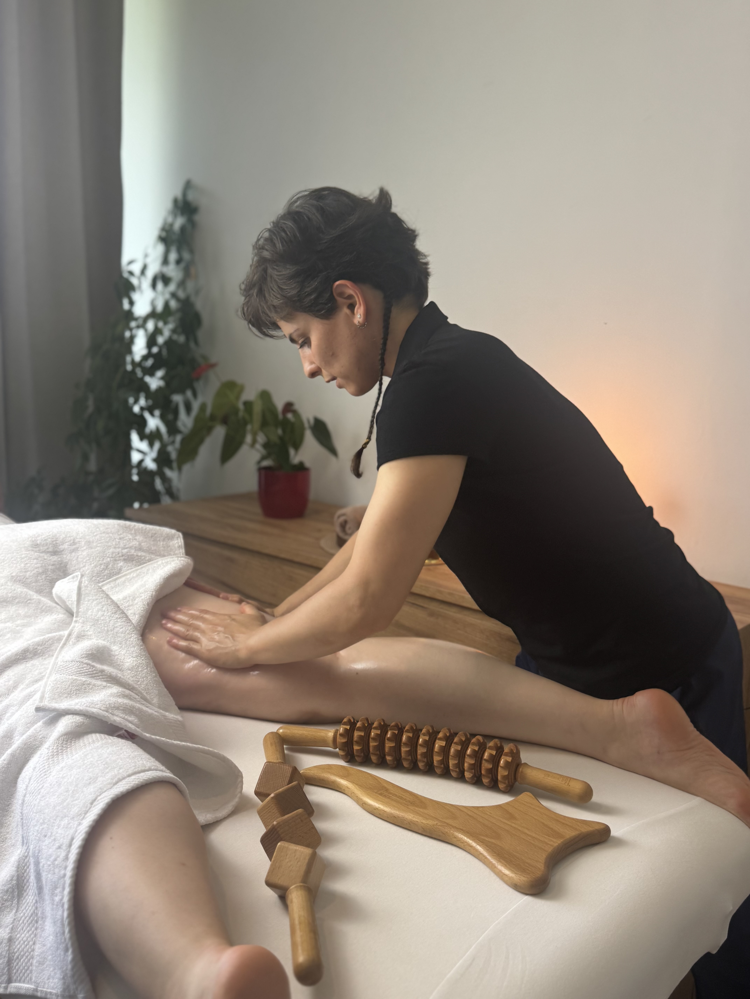
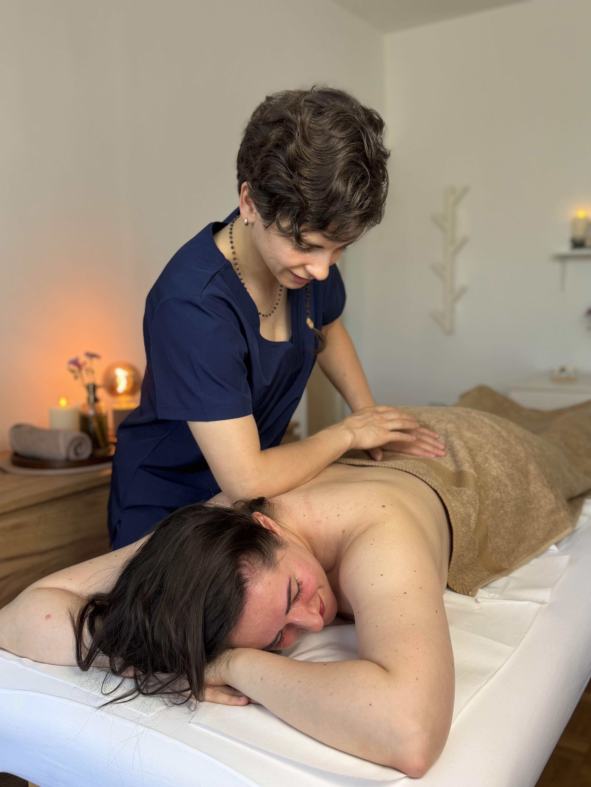
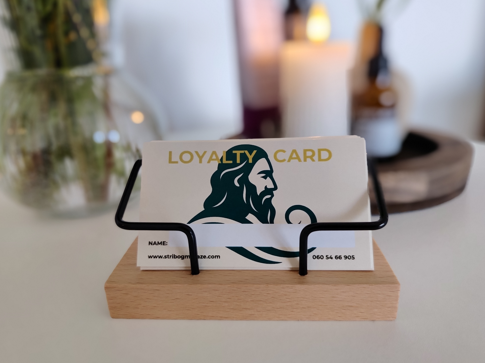
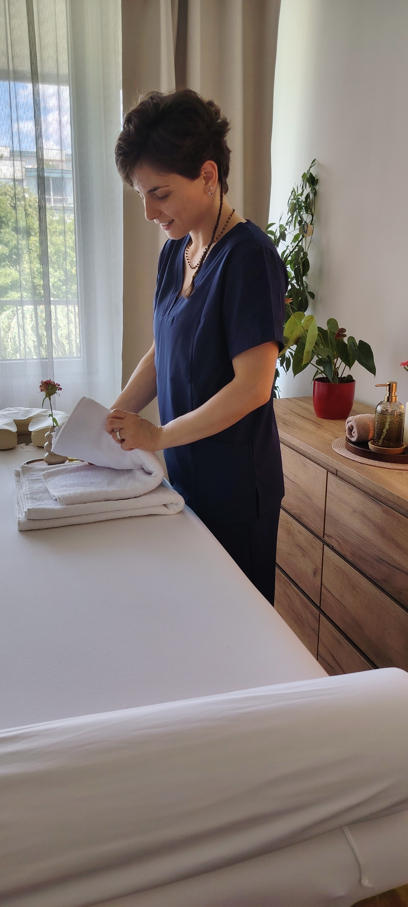
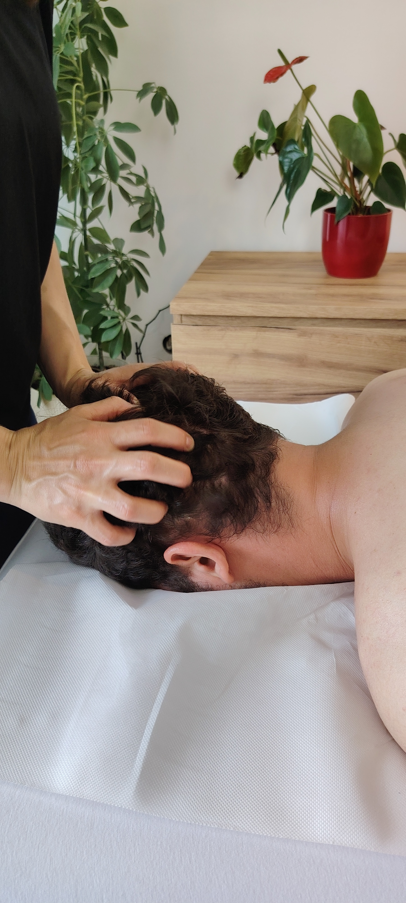

Naš prostor
Salon






Stribog je staroslovensko božanstvo vetra, daha i životne sile. Smatran je čuvarom ravnoteže između tela, uma i prirode — onaj koji pokreće energiju, uklanja zastoje i donosi promenu tamo gde je ona potrebna.
U starim verovanjima, vetar nije bio samo prirodna pojava, već nosilac snage, obnove i isceljenja. Stribog je simbol protoka — nevidljive, ali snažne sile koja povezuje čoveka sa sobom i sa svetom oko sebe.
U Salonu za masažu STRIBOG, ovo ime nosi svesno odabranu simboliku: masaža nije samo dodir, već proces pokretanja energije, oslobađanja napetosti i vraćanja tela u prirodan balans.
Svaki tretman osmišljen je kao ritual smirenja i obnove — trenutak u kojemu zastajemo, dišemo dublje i dopuštamo telu da se regeneriše.
Kao što vetar ne možeš videti, ali možeš osetiti njegov uticaj — tako i pravi dodir ostavlja dubok trag, tih ali snažan.
godina profesionalnog iskustva u radu sa telom
zadovoljnih klijenata koji su nam ukazali poverenje
vrsta masaža i tretmana u našoj ponudi
STRIBOG je mesto gde se dodir pretvara u terapiju, a vreme usporava. Nastao iz šest godina profesionalnog iskustva u radu sa telom, ovaj salon je posvećen dubokoj relaksaciji, regeneraciji i oslobađanju od napetosti koje savremeni način života ostavlja na telu i umu. Kroz individualni pristup, stručne terapeutske tehnike i pažljivo birane rituale, svaka masaža u STRIBOGU prilagođena je stvarnim potrebama klijenta — bez šablona, bez žurbe.
Salon za masažu STRIBOG nalazi se na Vračaru. Usluge masaže pružamo u našem salonu, kao i u okviru kompanija, kroz organizovane tretmane za zaposlene. Preporuke su postale naš najjači potpis — verujemo da kvalitetan dodir leči, balansira i vraća telo u prirodno stanje ravnoteže.




